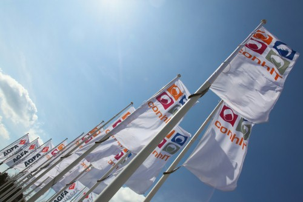
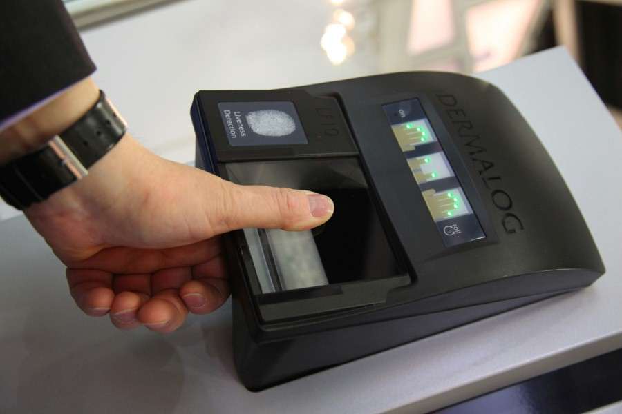

Informationen zu conhIT
Die dänische Regierung stärkt den Einsatz von Gesundheits-IT offiziell durch eine im Juni 2013 vorgestellte und
bis 2017 laufende Strategie zur Digitalisierung des dänischen Gesundheitswesens. Ziel ist es, den bisherigen

Einsatz von IT- und Telematik-Lösungen zu optimieren und landesweit zu implementieren. Parallel dazu
modernisiert Dänemark derzeit seine komplette Krankenhauslandschaft: 16 Bauprojekte – davon sieben Neubauten und
neun Modernisierungen – werden das dänische Krankenhaussystem in den nächsten zehn bis 15 Jahren prägen. Die
Integration von innovativer Gesundheits-IT soll dabei eine zentrale Rolle spielen.

„Dänemark spielt in der internationalen Topliga im Hinblick auf Infrastruktur, Applikationen, Datenaustausch und
Sicherheit“, so S.E. Per Poulsen-Hansen, Botschafter des Königreichs Dänemark und in dieser Funktion Gast der
conhIT 2014. „Die conhIT ist eine einzigartige Plattform für die teilnehmenden dänischen Spitzenunternehmen, um
ihre Lösungen und Konzepte für das Krankenhaus, Pflegeeinrichtungen und den ambulanten Bereich einem
internationalen Publikum vorzustellen.“